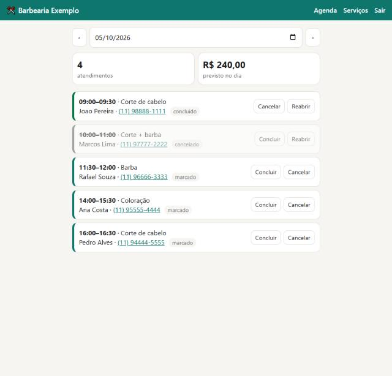

Agenda Fácil
App web de agendamento para barbearias, salões e clínicas: o cliente marca pelo celular e o dono gerencia tudo num painel com senha.Booking web app for barbershops, salons and clinics: customers book from their phone, the owner manages everything in a password-protected dashboard.
- Só mostra horários realmente livres; impossível marcar dois no mesmo horárioShows only truly free slots; double booking is impossible
- Agenda do dia, faturamento previsto, WhatsApp do cliente com um toqueDaily agenda, expected revenue, one-tap WhatsApp to customers
- 15 testes automáticos e proteções de segurança15 automated tests and security protections